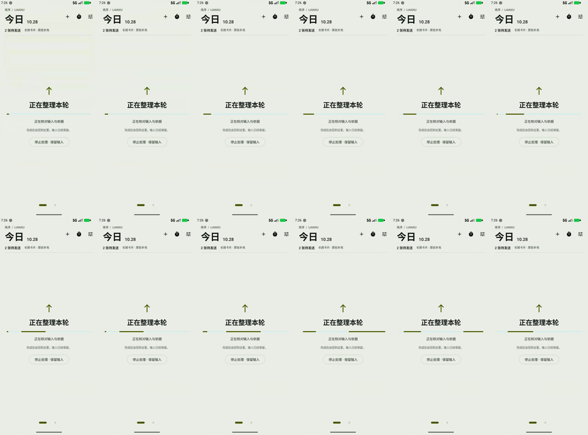
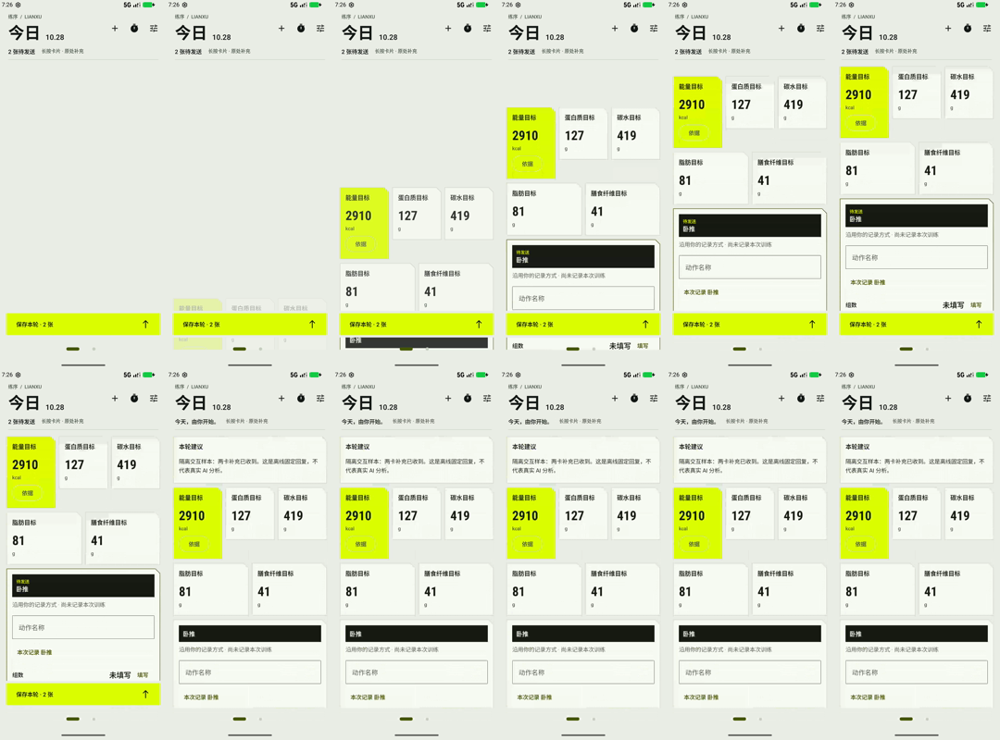
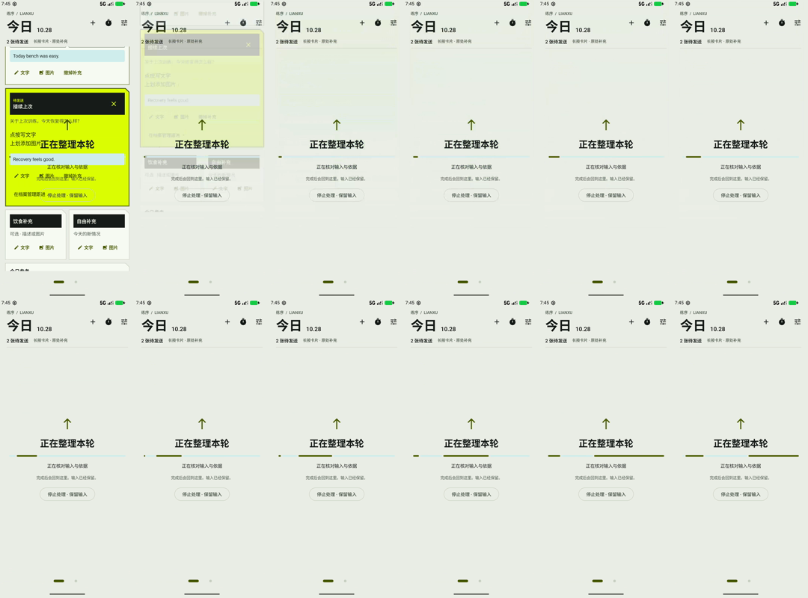
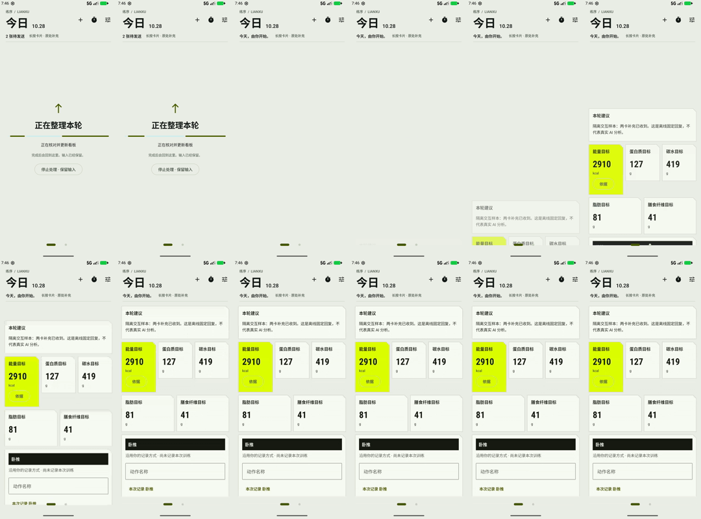
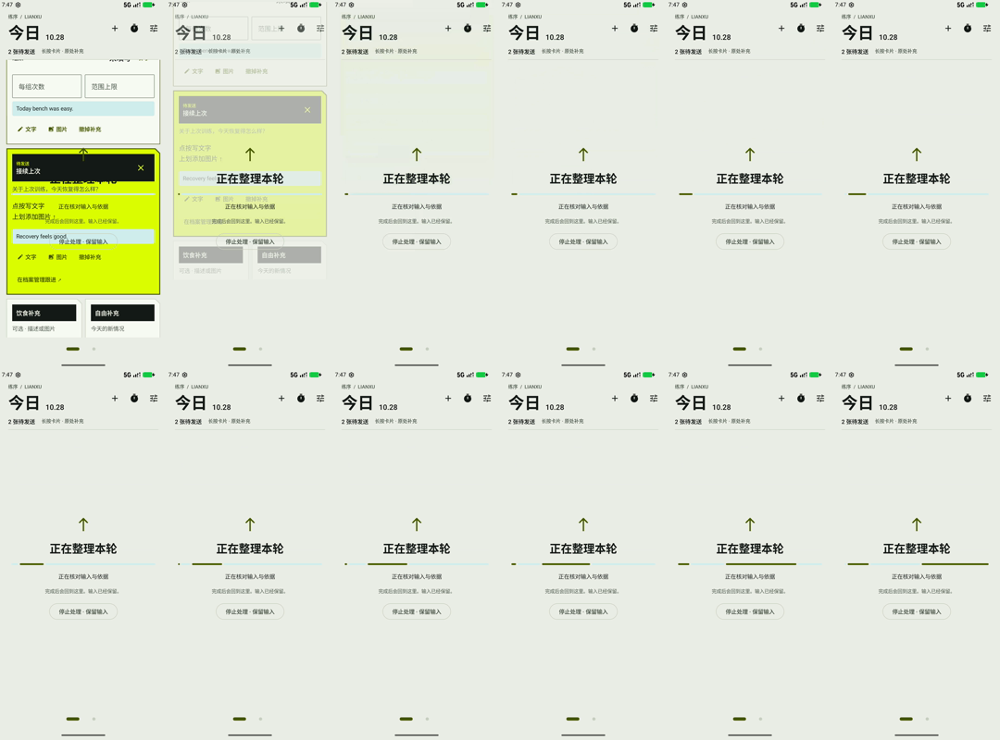
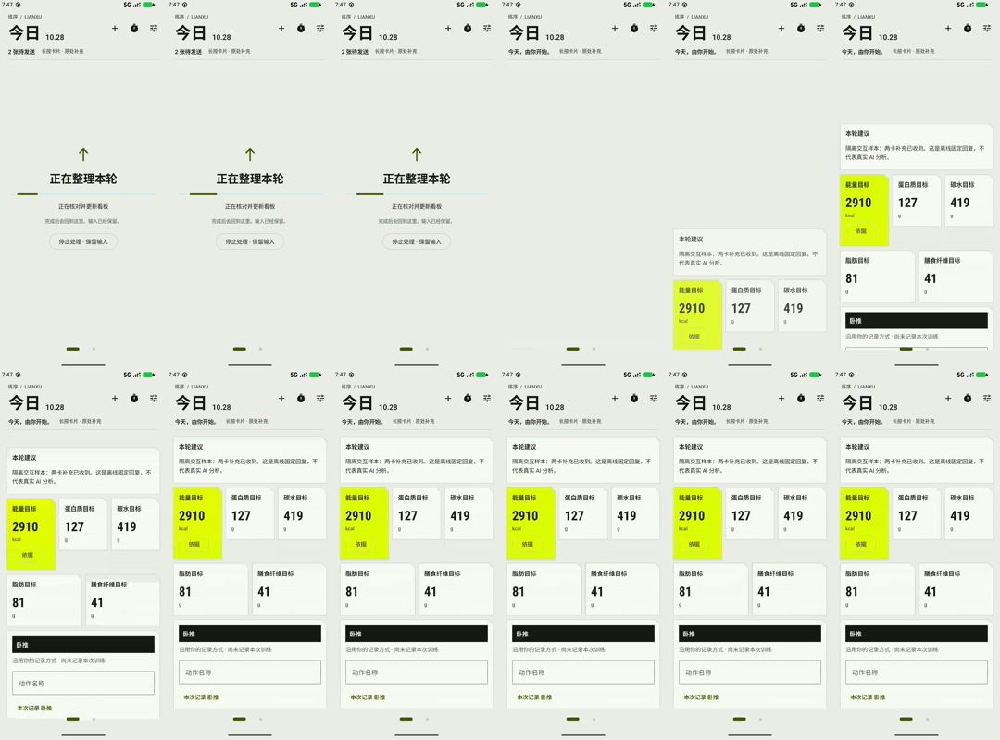

第一项为修复前问题复现；后两项为修复后的同包验收。第一项虽通过最终状态断言，入场动画仍有缺陷。
独立安装包、内存数据库、离线固定回复。复用正式界面和真实 Android 动画时钟。 运行通过表示两条批注进入同一已完成轮次且回复可见；不代表真实 AI 推理或主观手感已经通过。
先审阅所有运行，集中列问题；修完一批后生成新运行。旧证据保留。 短片根据业务事件自动截取；时间对齐近似，不能用来判定毫秒级性能。
修复前 · 已知入场缺陷
场景 54.15s · 全流程 65.79s · 主机 ADB 调用 27（不含 Maestro 内部调用，不能据此直接比较总调用量）


修复后 · ADB
场景 53.59s · 全流程 65.74s · 主机 ADB 调用 86（不含 Maestro 内部调用，不能据此直接比较总调用量）


修复后 · Maestro
场景 52.54s · 全流程 64.47s · 主机 ADB 调用 32（不含 Maestro 内部调用，不能据此直接比较总调用量）

